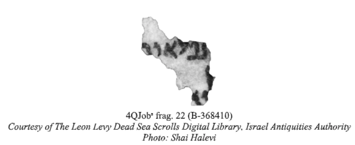

"מגילות" הינו מנוע לחיפוש מחרוזות בתוך טקסטים. האתר מאפשר העלאת טקסטים, חיפוש מספר מחרוזות, חיפוש במספר טקסטים וחיפוש מתקדם. קוד האתר פתוח וניתן למצוא אותו בעמוד ה-GitHub של יוצרת האתר, ענת גילנסון.
לעומת מנועי חיפוש רגילים, מנוע החיפוש "מגילות" מאפשר חיפוש של מספר מחרוזות אשר לא חייבות להיות עוקבות בטקסט. הדבר שימושי למקרים בהם בידי המחפש\ת רק חלק קטן מהטקסט המלא. דוגמה אחת היא חיפוש קטעי טקסט בתנ"ך ממגילות ים המלח:  בתמונה זו ניתן לראות קרע של אחת ממגילות ים המלח. אחת ממשימות האנשים החוקרים את המגילות הן לשייך קרעים אלה לטקסטים מהתנ"ך. החוקרים שיערו כי המילה העליונה היא "נפלאות". ניתן לחפש מילה זו באמצעות כלי חיפוש פשוטים אשר קיימים כמעט בכל תוכנת טקסט. הבעיה היא שעלולות להתקבל תוצאות חיפוש רבות שייאלצו את האדם המחפש להמשיך את החיפוש ידנית. אך בידי האדם המחפש פריט מידע נוסף – המילה שנמצאת בשורה מתחת למילה "נפלאות". החוקרים העריכו כי מדובר באותיות "לו". מנוע החיפוש "מגילות" מאפשר לחפש את המילה "נפלאות" ביחד עם "לו", למרות שהן נמצאות בשורות שונות בטקסט. חיפוש המילים ביחד, מביא לצמצום תוצאות החיפוש וזיהוי מקטע הטקסט המתאים בקלות רבה יותר.